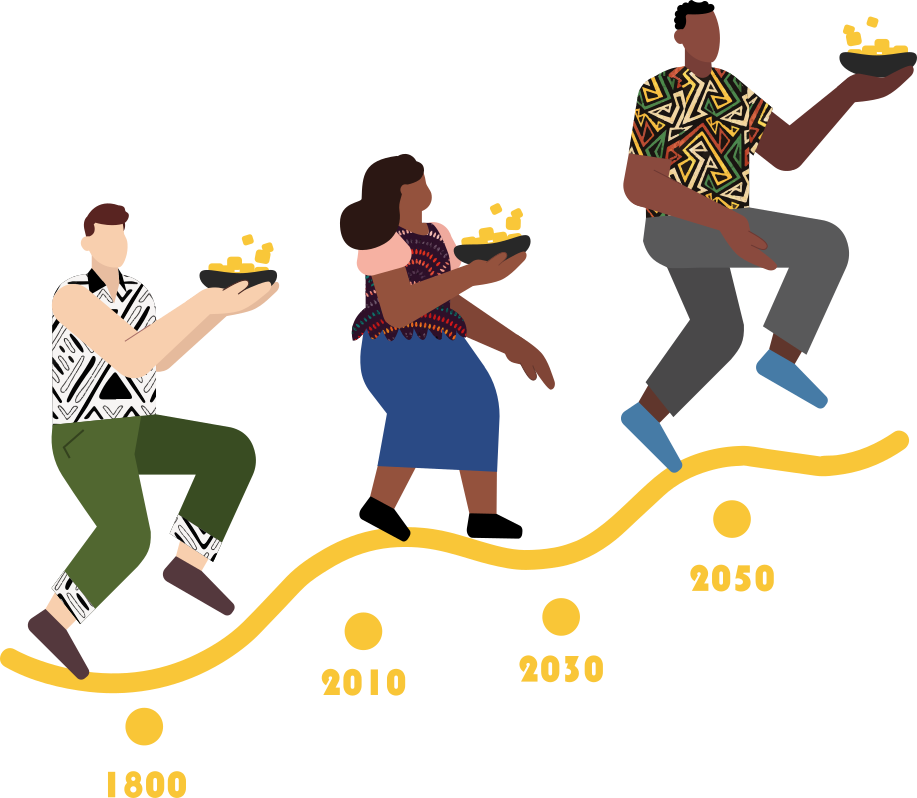
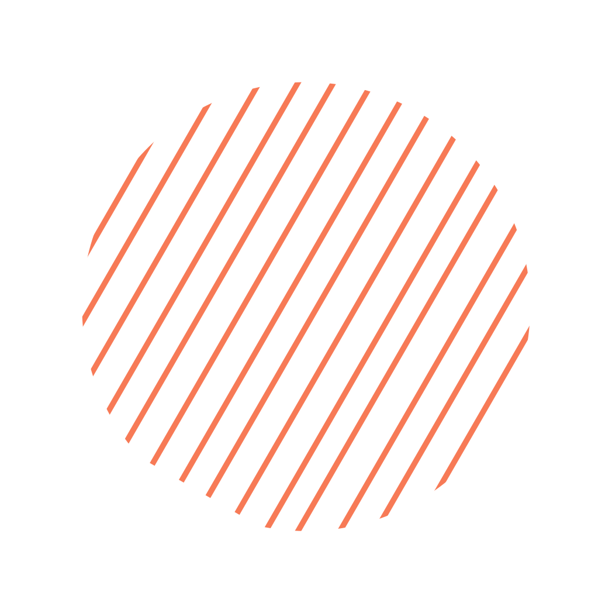
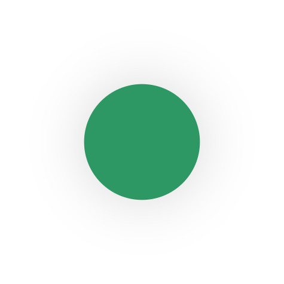
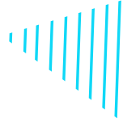
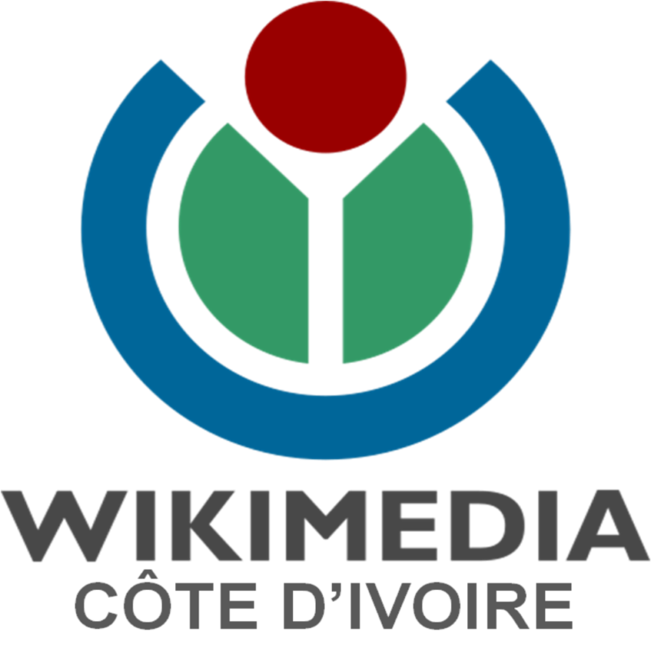

Conserver ma
langue,

c'est
conserver
mon identité.


Tout mettre en oeuvre pour
rendre nos cultures
immortelles


Soutenez nous

Ils nous font confiance

Grâce au travail remarquable de nos bénévoles, nous avons pu obtenir le
soutien de grands groupes tel que Wikimedia foundation, Wikimedia Côte d'ivoire
et bien d'autres. Vous pouvez aussi rejoindre l'organisation et nous aider à faire
la promotion du patrimoine culturel dans le monde entier.